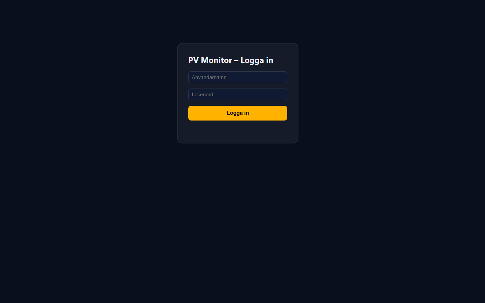
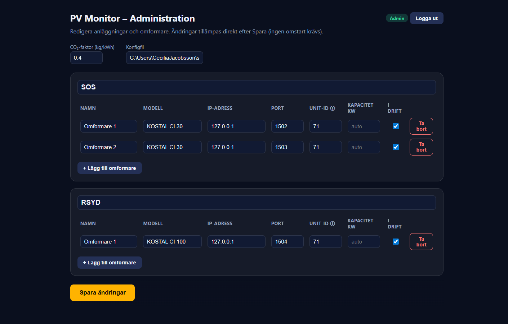
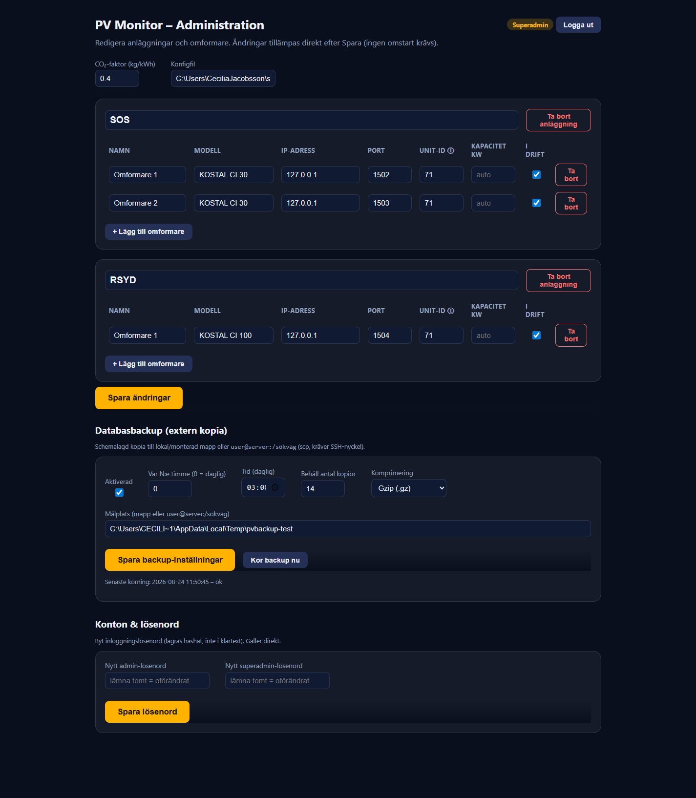

Innehåll
1. Så loggar du in
2. Roller och behörighet
3. Adminvyn – hantera omformare
4. Superadmin – anläggningar & inställningar
5. Byta lösenord
6. Vanliga frågor & felsökning
1. Så loggar du in
Administrationen är webbaserad och nås från valfri dator eller surfplatta som är ansluten till samma nätverk som skärmen.
- Öppna en webbläsare på en dator i nätverket.
- Gå till adressen
http://<skärmens-IP>:3000/admin.
Byt<skärmens-IP>mot skärmdatorns IP-adress (finns hos er nätverksansvarige). - Skriv in användarnamn och lösenord och välj Logga in.

2. Roller och behörighet
Det finns två roller. Använd den som motsvarar det du behöver göra.
| Roll | Kan göra |
|---|---|
| admin | Hantera omformare: namn, modell, IP-adress, port, unit-ID och kapacitet. Slå omformare i eller ur drift samt lägga till och ta bort omformare. |
| superadmin | Allt som admin kan, plus: lägga till/ta bort/döpa om hela anläggningar, ändra CO₂-faktor, ställa visningstid per vy, hantera sidfotens logotyper, aktivera en valfri bildsida, konfigurera backup, nollställa produktionshistoriken samt byta lösenord. |
3. Adminvyn – hantera omformare

Redigera en omformare
- Välj anläggningen och klicka på omformaren du vill ändra.
- Justera fält vid behov: namn, modell, IP-adress, port (standard 1502), unit-ID (standard 71) och kapacitet (kW).
- Spara. Skärmen uppdateras automatiskt.
Slå i eller ur drift
Ta tillfälligt bort en omformare från skärmen utan att radera den – slå den ur drift. En anläggning vars samtliga omformare är urkopplade visas inte alls.
Lägga till eller ta bort en omformare
- Lägg till: välj anläggning, Lägg till omformare, fyll i uppgifterna och spara.
- Ta bort: öppna omformaren och välj Ta bort.
4. Superadmin – anläggningar & inställningar

Anläggningar
Lägg till, döp om eller ta bort en hel anläggning. Att lägga till en anläggning skapar automatiskt en ny roterande vy på skärmen.
CO₂-faktor
Faktorn (standard 0,4 kg/kWh) styr hur mycket minskad CO₂ som visas. Ändra den vid behov enligt er beräkningsgrund.
Visningstid per vy
Ställ in hur många sekunder varje vy visas innan karusellen roterar vidare (standard ~15 s).
Sidfotens logotyper
Välj, ladda upp och sortera logotyperna i sidfoten samt ändra deras storlek.
Bildsida (valfri)
Aktivera en extra sida med en rubrik och en eller flera bilder (t.ex. samarbetspartners). En valfri bakgrundston kan lyfta fram bilder mot den mörka bakgrunden.
Backup
Konfigurera schemalagd, komprimerad kopia av databasen till en egen server (via SSH-nyckel). Ställ in målplats, schema, komprimering och hur många kopior som sparas. Använd Kör backup nu för att verifiera att det fungerar.
Nollställ produktionshistorik
Rensar systemets timdiagram och cache – används t.ex. för att ta bort simulerad testdata inför skarp drift. Omformarnas egna totaler påverkas inte (de läses in igen).
5. Byta lösenord
- Logga in som superadmin.
- Gå till Konton & lösenord.
- Välj roll (admin eller superadmin), skriv nytt lösenord och spara.
Lösenordet lagras hashat (aldrig i klartext) och gäller direkt.
6. Vanliga frågor & felsökning
| Symptom på skärmen | Vad det betyder / åtgärd |
|---|---|
| Röd prick på en omformare | Omformaren svarar inte. Kontrollera IP-adress, nätverk och att omformaren är på. |
| Gul banner: ”X av Y omformare offline” | Systemet når inte en eller flera omformare via Modbus. Effekt visas som 0, men energitotaler behålls från senast kända värde. |
| Röd banner: ”Ingen kontakt med servern” | Skärmen når inte systemet. Senast kända värden visas. Kontrollera att skärmdatorn är igång och nätverket fungerar. |
| Klockan i sidfoten står stilla | Datan är gammal – se banners ovan. Sidfoten visar alltid ”Uppdaterad HH:MM:SS”. |
| Kommer inte in i admin | Kontrollera adressen http://<skärmens-IP>:3000/admin och att du är
på samma nätverk. Vid glömt lösenord: kontakta systemleverantören. |